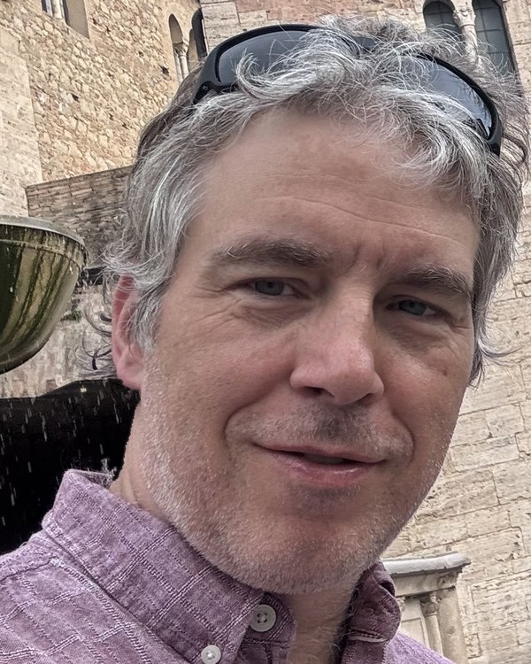
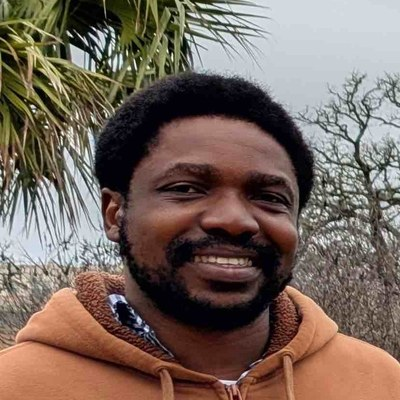
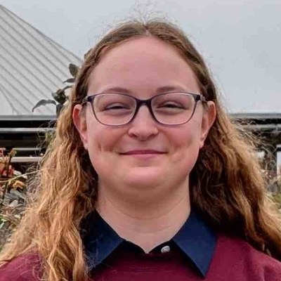
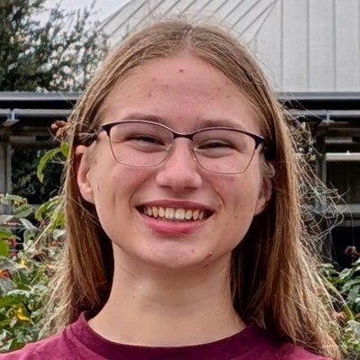

People

Claudio Casola
Principal Investigator (he/him) · Associate Professor, Department of Ecology and Conservation Biology
Claudio Casola received his B.S. and M.S. in Biology and his Ph.D. in Molecular Biotechnology from the University of Pisa, Italy. His research addresses the origin and evolution of new genes, including de novo genes, gene duplicates, retrocopies and domesticated transposable elements, using comparative genomics across plants and animals.
Office WFES 318 · (979) 845-6295 · ccasola@tamu.edu
Current members

Adekola Owoyemi
Ph.D. candidate, Ecology and Conservation Biology
De novo gene evolution in flowering plants
Matthew Marano
Ph.D. candidate, Ecology and Evolutionary Biology

Sierra Sanders
Ph.D. student, Ecology and Evolutionary Biology
Tori Bowman
Undergraduate, Biochemistry

Catherine Chaison
Undergraduate, Genetics
Sofia Flores
Undergraduate, Biochemistry
Sofia Rosas
Undergraduate, Biochemistry
Sree Harshini Satheeskumar
Undergraduate
Sten Schmidt
Undergraduate, Computer Science
Samhita Vemuri
Undergraduate, Biochemistry
Alumni
Postdocs and graduate students
- Tomasz Koralewski
Postdoctoral Fellow
- Ian MacLachlan
Postdoctoral Fellow
- Jingjia Li
Ph.D. student, ESSM
- Shelby Landa
M.S. student, ECCB
- Habibul Islam
M.S. student, ESSM · next, Research Assistant, Baylor College of Medicine
- Wiexi Zhu
M.S. student, MEPS · next, Ph.D. program in biostatistics, UT Dallas
Undergraduates
- Sierra Ortega
- Nicole Rosenfeld
- Riya Chauhan
- Evan Ying
- Yasamin Mohmand
- Haley Girard
- Alejandro Tovar
- Aubrey Rinderknecht
- Scott Pearson
- Meghan Kinder
- Angelina Bernardini